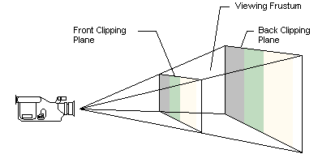

A viewing frustum is 3D volume in a scene positioned relative to the viewport's camera. The shape of the volume affects how models are projected from camera space onto the screen. The most common type of projection, a perspective projection, is responsible for making objects near the camera appear bigger than objects in the distance. For perspective viewing, the viewing frustum can be visualized as a pyramid, with the camera positioned at the tip. This pyramid is intersected by a front and back clipping plane. The volume within the pyramid between the front and back clipping planes is the viewing frustum. Objects are visible only when they are in this volume.

If you imagine that you are standing in a dark room and looking through a square window, you are visualizing a viewing frustum. In this analogy, the near clipping plane is the window, and the back clipping plane is whatever finally interrupts your view—the skyscraper across the street, the mountains in the distance, or nothing at all. You can see everything inside the truncated pyramid that starts at the window and ends with whatever interrupts your view, and you can see nothing else.
The viewing frustum is defined by fov (field of view) and by the distances of the front and back clipping planes, specified in z-coordinates.

In this illustration, the variable D is the distance from the camera to the origin of the space that was defined in the last part of the geometry pipeline—the viewing transformation. This is the space around which you arrange the limits of your viewing frustum. For information about how this D variable is used to build the projection matrix, see What Is the Projection Transformation?